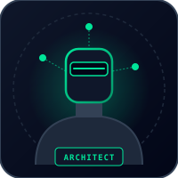

ONLINEAdrián Ezequiel Ramírez
Buenos Aires, Argentina • Fundador de SoftwArg
Más de 9 años diseñando y migrando sistemas críticos: desde .NET Framework 3.5 / 4.5 hasta .NET 11, motores espaciales GIS, plataformas financieras y sistemas agénticos con IA en producción.
Senior Software & AI Engineer — LA NACION +
Desarrollo y evolución de ecosistemas corporativos de alta demanda en .NET moderno y arquitectura cloud. Implementación de pipelines de integración de datos, automatización de despliegues en Azure DevOps, y desarrollo transversal de microservicios ligeros, jobs asíncronos y funciones serverless en Python y AWS Lambda para procesamiento continuo.
Arquitecto de Software .NET & AI — AMERICA VIRTUAL SA (Proyecto AGIP)
Arquitectura, mantenimiento y evolución del sistema tributario y de impuestos de CABA (AGIP) bajo estándares de Clean Architecture en .NET. Liderazgo técnico en la migración y reingeniería de bases de datos NoSQL hacia modelos relacionales de alta integridad, logrando mejoras sustanciales en tiempos de consulta y consistencia. Integración de módulos de IA para validación asistida y optimización de flujos internos, complementado con microservicios y jobs de soporte en Python/AWS.
AI Engineer & Full Stack Developer — Sisem
Diseño y desarrollo integral de un CRM inteligente para estudios jurídicos potenciando cada caso de uso legal con modelos de Inteligencia Artificial especializados (antes del auge masivo de los frameworks agénticos actuales). Benchmarking, optimización e implementación en producción el mismo día de su lanzamiento de cada nueva generación de modelos: desde GPT-3.5 / GPT-4 hasta toda la familia DeepSeek y modelos emergentes, con ciclos mensuales de actualización y ajuste fino de prompts/pipelines.
Full Stack Developer & Software Architect — OSECAC (Obra Social)
Modernización crítica de arquitectura backend: migración de servicios .NET Framework 3.5 a .NET 7, transición de servicios heredados SOAP a APIs REST escalables y reconversión de aplicaciones de escritorio Windows Forms a plataformas web en ASP.NET Core. Implementación end-to-end de la billetera virtual para afiliados, habilitando la compra digital de bonos y reserva automatizada de turnos médicos.
Administrador de Bases de Datos Espaciales & .NET Developer
Administración de SQL Spatial, cartografía sobre Oracle e integración con AutoCAD Maps. Desarrollo de APIs en .NET Framework 4.5 y aplicaciones móviles de alta precisión geográfica para captura y validación de coordenadas exactas en campo, incorporando reconocimiento de voz, lectura automatizada y normalización de datos georreferenciados.
Creador de Sistemas POS & Facturación Electrónica (Distribuidora ENROQUE)
Desarrollo a medida de sistemas de Punto de Venta (POS) con integración de facturación electrónica (AFIP). Creación del software central de gestión comercial y facturación mayorista para la distribuidora de quesos ENROQUE, incluyendo motor de actualización automática de listas de precios y control de cuentas corrientes.